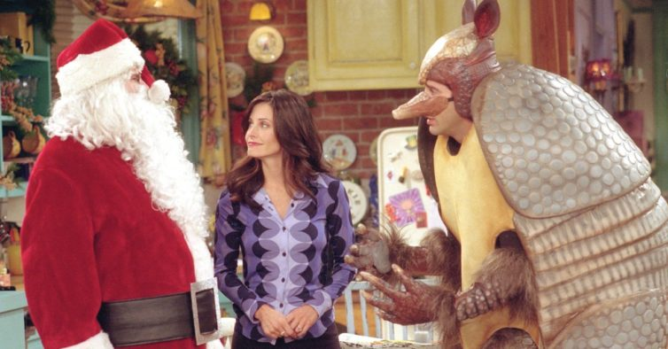

Na sétima temporada, Joey
retorna triunfante ao seu papel em Days of Our Lives,
mas desta vez volta com um novo cérebro, o da personagem Jessica
Lockhart. No último episódio desta temporada, é hora
do casamento de Chandler e Monica, mas na noite
anterior Chandler se apavora e desaparece. Enquanto
ele está fora, Phoebe encontra um teste de gravidez
positivo no banheiro de Mônica, e acredita que a
amiga esteja grávida.
Phoebe e Ross encontram
Chandler em seu escritório e o convencem a retornar.
Porém, já mais próximo da hora da cerimônia, Chandler
se apavora novamente e aparentemente foge.
Mônica e Chandler
se casam, mas quando o noivo diz à noiva que sabe de
sua gravidez, ela diz que não está grávida, e que o
teste encontrado por Phoebe não era seu.
Melhores episódios:
- "Aquele com o Momento da Monica" (07x01)
- "Aquele com os Parceiros de Cochilo" (07x06)
- "Aquele com o Tatu das Festividades" (07x10)
- "Aquele em que Todos Fazem 30 Anos" (07x14)
- "Aquele com o Grande Beijo da Rachel" (07x20)
